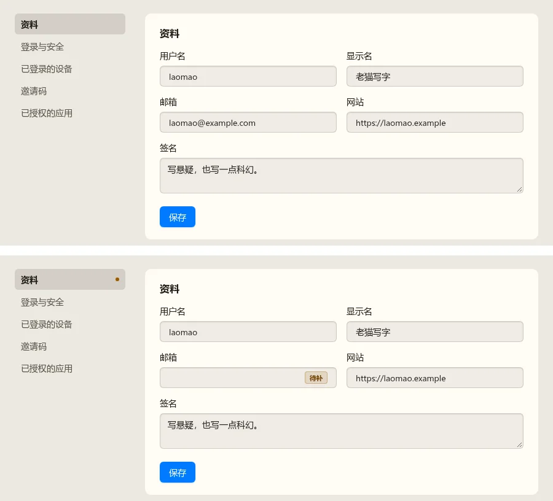

官方站前端 第 3 轮：按第 2 轮的意见改过的三处
登录与注册页照图做吗？
推荐同意：GitHub、Google 是表单下面的两个图标，两页同一种画法；注册时点图标，用上面已填的注册码与用户名，邮箱与密码不用填。


账号页照图做吗？
推荐同意：横幅去掉了。没有邮箱的账号只在邮箱那一格里多一枚“待补”、目录的“资料”后面多一个点，别的位置都不动。
有邮箱（上）与没有邮箱（下）


没有邮箱的账号，整页与 390 宽


数据表格与分页照图做，并做成 nb-ui 的通用组件吗？
推荐同意：工具条、表格、分页三块位置固定，最后一页不满时分页条也在原处；给 nb-ui 加“分页”和“带工具条与分页的数据表格”两个组件，用户、注册码与邀请码、OAuth 客户端、审计四页都用它。


还没定、后面的轮次再看
| 事项 | 现在图上是什么 |
|---|---|
| 图表库与看板的最终样子 | 第 1 轮里手画的示意图 |
| 红色印章里的字 | 临时写的 NB |
| 隐私政策与服务条款两页 | 等条款的文字起草后再排 |
已定
- 主页只做登录入口；旁边留一行产品说明与隐私政策、服务条款的链接
- 管理员登录后先看统计看板；看板首屏按第 1 轮图上的排法
- 普通用户登录后直接进账号页
- 登录、注册、同意条款、授权确认与公开页适配手机；管理面板只做桌面宽度
- 第一版界面只有中文
- 全站用默认配色，只有登录页这一组画成稿纸（第 1 轮）
- 注册、同意条款、授权确认与登录页用同一张稿纸（第 2 轮）